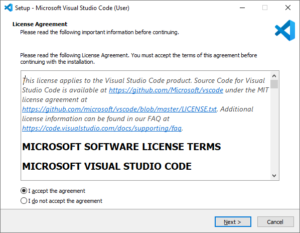
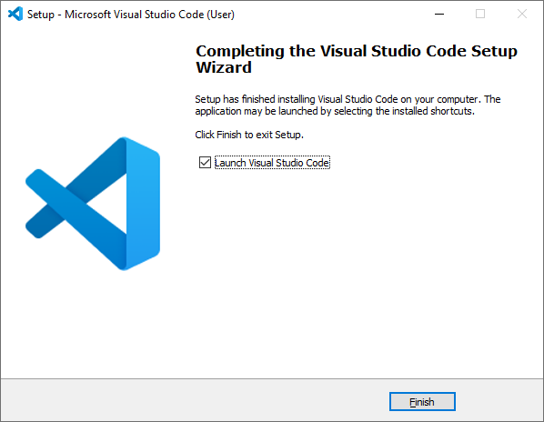

A tutorial: Git and GitHub
A simple tutorial for the most important tool of a developer
Contents
1. Overview
1.1 What is Git?
Git is a version control system used to track changes in files or sets of files, originally designed by Linus Torvalds (arguably one of the most influential people in Information Technology) to facilitate cooperation among programmers on source code during software development.
1.2 What is GitHub?
GitHub is a cloud-based hosting service that allows the creation and management of Git repositories. A free, basic user can create unlimited public/private repositories and is provided with 1 free website domain. GitHub also offers premium subscriptions with more advanced features and functionalities.
1.3 Why do we use Git and GitHub?
Whether you are an aspiring IT student or an experienced developer, Git is an indispensable tool that enables you to easily track changes to your code. Tracking your code history is very important, as it helps maintaining different versions of your software, making sure you would never lose any code and could recover them any time. When used in tandem with GitHub, you can effortlessly save your code to the cloud and allow smooth collaboration.
2. Before we start
For this tutorial, we will use:
There will be certain abbreviations used in this tutorial:
3. Setting up
3.1 Setting up your GitHub account and Repo
To create a GitHub account and your first Repository, do the following instructions:


.png)
.png)
You have created your first GitHub repo! Now we can move on to the next section.
3.2 Installing Visual Studio Code

While Git can be used on its own, it is recommended to use an IDE to optimise your workflow. Git supports an impressive number of IDEs, but in this tutorial, we will use Visual Studio Code, an IDE that is incredibly lightweight considering the features it has. Follow the instructions to download and install VS Code:

 
Just like that and VS Code should be successfully installed afterwards! Now we can move on to the next section.
3.3 Installing Git
Next, we will install Git and assign VS Code as Git’s default editor


Git is now successfully installed! We have finished setting up, now we can get to the part where we use Git.
4. Using Git:
4.1 Configuring Git and cloning your remote Repo
Disclaimer: For the purpose of this tutorial, I will use my GitHub account and Repo to demonstrate the process. The following instructions are for Windows.
After we have successfully installed our IDE and Git, we will now set up Git on VS Code using git config and clone our remote repo using git clone
You have created your first GitHub repo! Now we can move on to the next section.
3.2 Installing Visual Studio Code
While Git can be used on its own, it is recommended to use an IDE to optimise your workflow. Git supports an impressive number of IDEs, but in this tutorial, we will use Visual Studio Code, an IDE that is incredibly lightweight considering the features it has. Follow the instructions to download and install VS Code:
Just like that and VS Code should be successfully installed afterwards! Now we can move on to the next section.
3.3 Installing Git
Next, we will install Git and assign VS Code as Git’s default editor
Git is now successfully installed! We have finished setting up, now we can get to the part where we use Git.